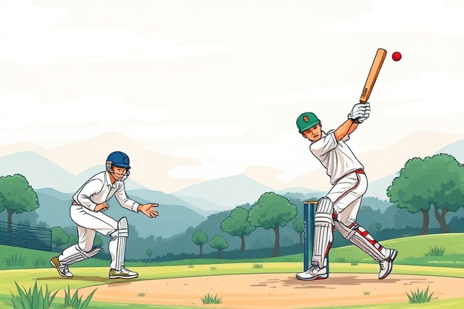

ক্রিকেটের হাতেখড়ি: নতুনদের জন্য খেলার নিয়ম ও প্রয়োজনীয় দক্ষতা
Category: cricket | Language: bn
ভারতবর্ষে ক্রিকেট কেবল একটি খেলা নয়, বরং এটি একটি আবেগের নাম। পাড়ার গলি থেকে শুরু করে আন্তর্জাতিক স্টেডিয়াম পর্যন্ত এই খেলার দাপট সর্বত্র। আপনি যদি ক্রিকেটের প্রতি আগ্রহী হন এবং একেবারে গোড়া থেকে এই খেলাটি শিখতে চান, তবে এই নিবন্ধটি আপনার জন্য। ক্রিকেটের নিয়মকানুন প্রথম দিকে কিছুটা জটিল মনে হতে পারে, বিশেষ করে এলবিডব্লিউ (LBW) বা ফিল্ডিং রেস্ট্রিকশনের মতো বিষয়গুলো। তবে একবার মৌলিক ধারণাগুলো পরিষ্কার হয়ে গেলে, আপনি সহজেই খেলাটি উপভোগ করতে পারবেন এবং মাঠে নিজের দক্ষতা প্রদর্শন করতে পারবেন। এই গাইডটিতে আমরা ক্রিকেটের মূল নিয়ম, ব্যাটিং-বোলিংয়ের কৌশল এবং নতুনদের জন্য প্রয়োজনীয় কিছু টিপস নিয়ে আলোচনা করব।
ক্রিকেটের মূল কাঠামোটি বেশ সহজ। এটি সাধারণত দুটি দলের মধ্যে খেলা হয়, যেখানে প্রতিটি দলে ১১ জন করে খেলোয়াড় থাকে। খেলার শুরুতে টসের মাধ্যমে ঠিক করা হয় কোন দল আগে ব্যাটিং করবে এবং কোন দল ফিল্ডিং। ব্যাটিং দলের লক্ষ্য থাকে নির্ধারিত ওভারের মধ্যে যত বেশি সম্ভব রান সংগ্রহ করা, আর ফিল্ডিং দলের লক্ষ্য হলো দ্রুত উইকেট তুলে নেওয়া এবং রান আটকে দেওয়া। ক্রিকেটের প্রধান তিনটি ফরম্যাট রয়েছে— টেস্ট (৫ দিনের খেলা), ওয়ানডে (৫০ ওভারের খেলা) এবং টি-টোয়েন্টি (২০ ওভারের খেলা)। নতুনদের জন্য ছোট ফরম্যাটে খেলা শুরু করা সহজ, কারণ এতে মনোযোগ এবং শক্তির সঠিক ব্যবহার দ্রুত শেখা যায়।
মাঠের মাঝখানে থাকা ২২ গজের অংশটিকে বলা হয় 'পিচ', যেখানে খেলার মূল লড়াই চলে। ক্রিকেটে নামার আগে সঠিক সরঞ্জামের গুরুত্ব অপরিসীম। আপনি যদি টেনিস বলের বদলে শক্ত লেদার বা সিজন বলে খেলতে চান, তবে নিরাপত্তার খাতিরে হেলমেট, প্যাড, গ্লাভস এবং অ্যাবডোমিনাল গার্ড (L-guard) পরা বাধ্যতামূলক। অনেক নতুন খেলোয়াড় শুরুতে হেলমেট বা প্যাড এড়িয়ে চলেন, যা বড় ধরনের চোটের কারণ হতে পারে। মনে রাখবেন, সঠিক মাপের ব্যাট বেছে নেওয়াও জরুরি; খুব ভারী ব্যাট দিয়ে খেলা শুরু করলে আপনার হাতের কব্জিতে ব্যথা হতে পারে এবং শট খেলার সময় সঠিক ভারসাম্য বজায় থাকবে না।
ব্যাটিংয়ের প্রথম পাঠ হলো আপনার 'স্ট্যান্স' বা দাঁড়ানোর ভঙ্গি এবং ব্যাট ধরার গ্রিপ। ব্যাট ধরার সময় দুই হাতের তালু দিয়ে একটি ইংরেজি 'V' অক্ষরের মতো আকৃতি তৈরি করুন। আপনার পা দুটি কাঁধের সমান দূরত্বে রাখুন এবং শরীরকে কিছুটা নমনীয় রাখুন যাতে বলের গতিবিধি অনুযায়ী নড়াচড়া করা যায়। নতুনদের জন্য সবচেয়ে গুরুত্বপূর্ণ হলো 'ফরোয়ার্ড ডিফেন্স' শেখা। সব বলে ছক্কা মারার চেষ্টা না করে বলের লাইন বুঝে রক্ষণাত্মকভাবে খেলা শিখলে দীর্ঘক্ষণ উইকেটে টিকে থাকা সম্ভব। মনে রাখবেন, আপনার মাথা যেন স্থির থাকে এবং বলের দিকে নজর থাকে শেষ মুহূর্ত পর্যন্ত।
বোলিং করার সময় প্রধান নিয়ম হলো হাত কনুই থেকে সোজা রাখা। যদি হাত ১৫ ডিগ্রির বেশি বেঁকে যায়, তবে তাকে 'চাকিং' বলা হয় যা ক্রিকেটে অবৈধ। একজন নতুন বোলার হিসেবে আপনার প্রথম লক্ষ্য হওয়া উচিত 'লাইন এবং লেংথ' ঠিক রাখা। গায়ের জোরে বল করার চেয়ে নির্দিষ্ট একটি জায়গায় বারবার বল ফেলা বেশি কার্যকর। অফ-স্টাম্পের ঠিক বাইরে বল ফেলার চেষ্টা করুন, যাকে বলা হয় 'করিডোর অফ আনসার্টেইনটি'। এতে ব্যাটসম্যান বিভ্রান্ত হয় এবং ভুল করার সম্ভাবনা বেড়ে যায়। শুরুতে মিডিয়াম পেস বা সাধারণ স্পিন দিয়ে অনুশীলন করা ভালো, যাতে বলের ওপর নিয়ন্ত্রণ তৈরি হয়।
আউট হওয়ার বিভিন্ন ধরন সম্পর্কে পরিষ্কার ধারণা থাকা জরুরি। প্রধানত ৫টি উপায়ে একজন ব্যাটসম্যান আউট হতে পারেন: বোল্ড (বল সরাসরি স্টাম্পে লাগলে), ক্যাচ (ব্যাটসম্যানের শট মাটিতে পড়ার আগে ফিল্ডার ধরে ফেললে), এলবিডব্লিউ (বল ব্যাটসম্যানের পায়ে লাগলে এবং আম্পায়ার মনে করলে সেটি স্টাম্পে লাগত), রান আউট (ব্যাটসম্যান ক্রিজে পৌঁছানোর আগে স্টাম্প ভেঙে দিলে) এবং স্টাম্পড (বল খেলার চেষ্টায় ক্রিজের বাইরে গেলে উইকেটকিপার স্টাম্প ভেঙে দিলে)। এছাড়াও 'হিট উইকেট' বা 'অবস্ট্রাক্টিং দ্য ফিল্ড'-এর মতো কিছু বিরল নিয়ম রয়েছে, যা খেলার অভিজ্ঞতার সাথে সাথে আপনি শিখতে পারবেন।
ফিল্ডিং হলো ক্রিকেটের এমন একটি অংশ যেখানে আপনি একাই ম্যাচের মোড় ঘুরিয়ে দিতে পারেন। 'ক্যাচ ধরলে ম্যাচ জেতা যায়'—এই প্রবাদটি ক্রিকেটে অত্যন্ত সত্য। ক্যাচ ধরার সময় হাত দুটি কাপের মতো করে বলের নিচে রাখুন এবং বল হাতে আসার সময় হাত কিছুটা শরীরের দিকে টেনে নিন যাতে আঘাত কম লাগে। ফিল্ডিং করার সময় সর্বদা বলের দিকে দৌড়ানোর মানসিকতা রাখুন এবং বল কুড়িয়ে দ্রুত উইকেটকিপারের হাতে ফেরত পাঠানোর অভ্যাস করুন। অলসভাবে দাঁড়িয়ে না থেকে প্রতিটি বলের সাথে নিজের অবস্থান সামান্য পরিবর্তন করা একজন ভালো ফিল্ডারের লক্ষণ।
অনুশীলনের জন্য একটি বাস্তবসম্মত উদাহরণ হলো 'শ্যাডো ব্যাটিং' এবং 'হ্যাংগিং বল' ড্রিল। একটি পুরনো বলকে নেট বা দড়িতে বেঁধে ঝুলিয়ে দিন এবং সেটি দিয়ে বারবার ড্রাইভ বা ডিফেন্স করার প্র্যাকটিস করুন। এটি আপনার চোখের সাথে হাতের সমন্বয় (Hand-eye coordination) উন্নত করতে সাহায্য করবে। আয়নার সামনে দাঁড়িয়ে নিজের ব্যাটিং স্ট্যান্স বা বোলিং অ্যাকশন পরীক্ষা করুন। কোনো অভিজ্ঞ কোচ বা সিনিয়র খেলোয়াড়ের সাহায্য নিন যাতে শুরুতে কোনো ভুল টেকনিক আপনার অভ্যাসে পরিণত না হয়। নিয়মিত অন্তত ৩০ মিনিট এই ধরনের ড্রিল করলে কয়েক সপ্তাহের মধ্যেই আপনি নিজের খেলায় পরিবর্তন লক্ষ্য করবেন।
নতুনদের করা সাধারণ ভুলগুলোর মধ্যে অন্যতম হলো বলের দিক থেকে চোখ সরিয়ে নেওয়া বা খুব তাড়াতাড়ি বড় শট খেলার চেষ্টা করা। অনেক সময় তরুণ খেলোয়াড়রা বোলিং করার সময় শুধু গতির দিকে নজর দেন, যার ফলে প্রচুর 'ওয়াইড' বা 'নো বল' হয়। নিরাপত্তা সতর্কবার্তা হিসেবে মনে রাখবেন, সিজন বলে খেলার সময় উপযুক্ত জুতো (Spikes) ব্যবহার করুন যাতে পিচ্ছিল মাঠে পড়ে না যান। এছাড়া রোদে দীর্ঘক্ষণ খেলার সময় প্রচুর জল পান করুন এবং সানস্ক্রিন ব্যবহার করুন যাতে ডিহাইড্রেশন বা সানবার্ন না হয়। ক্রিকেট একটি ধৈর্যশীল খেলা, তাই শুরুতেই ব্যর্থ হলে হতাশ হওয়া চলবে না।
উপসংহারে বলা যায়, ক্রিকেট শেখার সেরা উপায় হলো নিয়মিত মাঠে নামা এবং খেলা দেখা। কেবল নিয়ম জানলেই হবে না, সেগুলোর প্রয়োগ বুঝতে হবে। আপনার পরবর্তী পদক্ষেপ হতে পারে আপনার এলাকার কোনো স্থানীয় ক্রিকেট ক্লাবে যোগ দেওয়া অথবা বন্ধুদের সাথে নিয়মিত নেট প্র্যাকটিস শুরু করা। ছোট ছোট লক্ষ্য নির্ধারণ করুন, যেমন—এক ওভারে একটিও বাজে বল না করা বা টানা ১০টি বল ডিফেন্স করা। মনে রাখবেন, আজকের কিংবদন্তি ক্রিকেটাররাও একদিন আপনার মতোই শূন্য থেকে শুরু করেছিলেন। ধৈর্য এবং পরিশ্রম বজায় রাখলে আপনিও একদিন এই চমৎকার খেলায় পারদর্শী হয়ে উঠবেন।